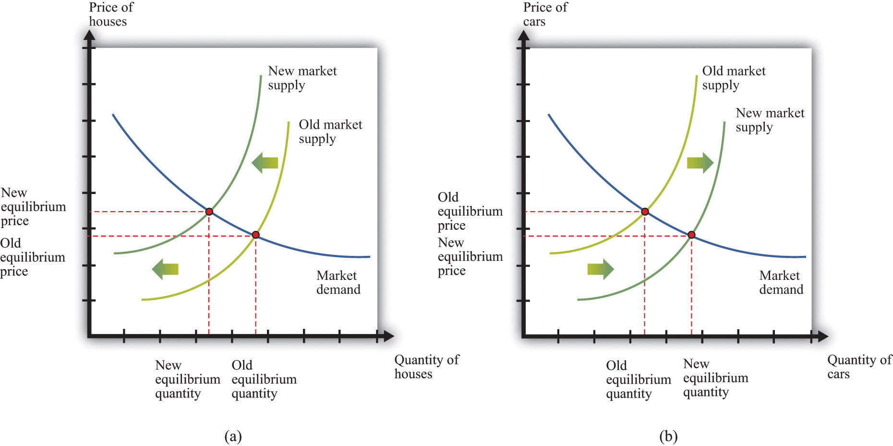

After you have read this section, you should be able to answer the following questions:
Our first approach to interpreting the Great Depression focuses on potential outputThe amount of real GDP the economy produces when the labor market is in equilibrium and capital goods are not lying idle., which is the amount of real gross domestic product (real GDP) an economy produces when the labor market is in equilibrium and capital goods are not lying idle. We start here because this approach corresponds reasonably closely to the economic wisdom of the time.
Comparative statics is a technique that allows us to understand the effects of a decrease in technology in a particular market, such as the market for new homes. In a comparative statics exercise, we look at what happens to endogenous variables (in this case, production and prices of new homes) when we change an exogenous variable (in this case, technology). A decline in technology shifts the market supply curve leftward: at any given price, the decrease in technology means that the firm can produce less output with its available inputs. The result is shown in part (a) of Figure 22.4 "An Inward Shift in the Market Supply of Houses" for the housing market: output of new homes decreases and the price of new homes increases.
Toolkit: Section 31.16 "Comparative Statics"
You can review the technique of comparative statics and the definition of endogenous and exogenous variables in the toolkit.
Figure 22.4 An Inward Shift in the Market Supply of Houses
(a) A decrease in technology leads to an inward shift of the market supply curve for houses. (b) The labor and other resources that are not being used to produce houses can now be used to produce other goods, such as cars.
If this decline in technology in the housing market were the only change in the economy, what would happen? Construction firms would fire workers because these firms were building fewer new homes. Over time, however, the fired construction workers would find new jobs in other sectors of the economy. The same logic applies to other inputs: capital and other inputs that were being used in the construction industry would be redeployed to other markets. For example, there would be additional labor and other inputs available for automobile production. Part (b) of Figure 22.4 "An Inward Shift in the Market Supply of Houses" shows the resulting outward shift in the supply curve for cars. It is difficult to explain the big decrease in output and the high rate of unemployment in the Great Depression through a change in technology in a single market.
Suppose, however, that this change in technology does not happen in just one market but occurs across the entire economy. Then a version of part (a) in Figure 22.4 "An Inward Shift in the Market Supply of Houses" would hold for each market in the economy. We would see declines in economic activity across a wide range of markets. Moreover, with declines in so many industries, we would expect to see lower real wages and less employment. The idea that workers could easily move from one industry to another is not as persuasive if the entire economy is hit by an adverse technology shock.
We use growth accounting to show how changes in output are driven by changes in the underlying inputs—capital, labor, and technology. Equivalently, we use the technique to give us a measure of the growth rate of technology, given data on the growth rates of output, capital, and labor:
technology growth rate = output growth rate − [a × capital stock growth rate] − [(1 − a) × labor growth rate].We have omitted human capital from this growth accounting equation. We do so because, unfortunately, we do not have very good human capital measures for the period of the Great Depression. Human capital typically changes very slowly, so this is not too much of a problem: over a period of a decade, we do not expect big changes in human capital. Any changes in human capital that do occur are included in the catchall “technology” term.
Toolkit: Section 31.28 "Growth Accounting"
You can review the technique of growth accounting in the toolkit.
The key ingredient needed for the growth accounting equation is the number a. It turns out that a good measure of a is the fraction of real GDP that is paid to owners of capital. Roughly speaking, it is the amount of GDP that goes to the profits of firms. Equivalently, (1 − a) is the fraction of GDP that is paid to labor. The circular flow of income reminds us that all income ultimately finds its way back to households in the economy, which is why these two numbers sum to one.
The economist John Kendrick applied such growth accounting to data from the Great Depression.See John W. Kendrick, Productivity Trends in the United States (Princeton, NJ: Princeton University Press, 1961), particularly Table A-XXII, p. 335, and the discussion of these calculations. Table 22.2 "Growth Rates of Real GDP, Labor, Capital, and Technology, 1920–39*" summarizes his findings. Each row in Table 22.2 "Growth Rates of Real GDP, Labor, Capital, and Technology, 1920–39*" decomposes output growth into three components. In 1923, for example, output grew at a very high rate of 14.2 percent. This growth in output came from labor growth of 9.9 percent and capital stock growth of 2.0 percent. The remainder, which we interpret as growth in technology, grew at 9.5 percent. By all accounts, 1923 was a good year. The other entries in the table can be read in the same way.
Table 22.2 Growth Rates of Real GDP, Labor, Capital, and Technology, 1920–39*
| Year | Real GDP | Labor | Capital | Technology |
|---|---|---|---|---|
| 1920 | 0.4 | 1.4 | 2.1 | −1.2 |
| 1921 | −3.6 | −11.5 | 1.5 | 4.0 |
| 1922 | 6.4 | 8.7 | 0.7 | 0.1 |
| 1923 | 14.2 | 9.9 | 2.0 | 9.5 |
| 1924 | 2.0 | −3.2 | 2.6 | 4.9 |
| 1925 | 3.6 | 4.0 | 2.4 | 0.1 |
| 1926 | 6.2 | 4.2 | 3.2 | 3.4 |
| 1927 | 1.1 | −0.2 | 2.9 | 0.5 |
| 1928 | 1.0 | 0.6 | 2.4 | −0.3 |
| 1929 | 6.5 | 2.2 | 2.4 | 5.7 |
| 1930 | −9.2 | −8.1 | 2.0 | −4.8 |
| 1931 | −7.5 | −10.5 | 0.1 | 0.4 |
| 1932 | −14.5 | −13.5 | −2.2 | −5.2 |
| 1933 | −2.5 | −1.0 | −3.4 | −1.2 |
| 1934 | 9.9 | 0.4 | −2.8 | 13.7 |
| 1935 | 9.0 | 5.8 | −1.4 | 6.6 |
| 1936 | 12.8 | 10.3 | 0.0 | 6.8 |
| 1937 | 6.9 | 5.8 | 1.4 | 2.9 |
| 1938 | −5.5 | −9.3 | 0.9 | 1.2 |
| 1939 | 9.1 | 6.2 | −0.3 | 4.6 |
| *All entries are annual growth rates calculated using data from John W. Kendrick, Productivity Trends in the United States (Princeton, NJ: Princeton University Press, 1961), Table A-XXII, 335. Following the discussion in Kendrick, the capital share (a) was 0.30 until 1928 and 0.25 thereafter. | ||||
Real GDP and technology were both growing in most years in the 1920s. In the early 1930s both variables decreased, and both grew again as the economy recovered from the Great Depression. In other words, technology growth and output growth are positively correlated over this period. This suggests the possibility that changes in technology caused the changes in output—always remembering that, as we observed earlier, correlation need not imply a causal relationship. An improvement in technology causes firms to want to produce more. They demand more workers, so employment and real wages increase. The increased output, through the circular flow, means that there is increased income. Households increase both consumption and savings. Higher savings means higher investment, so, over time, the economy accumulates more capital. Exactly the opposite holds if there is a decrease in technology: in this case, employment, consumption, and investment all decrease.
Does this theory fit the facts? For the roaring twenties, we see growth in output, labor, and capital. In addition, there was a positive technology growth rate in almost all the years of the decade. These movements are indeed consistent with the behavior of an economy driven by improvements in technology. Jumping back for a moment to individual markets, improvements in technology shift supply curves rightward. Increased output is therefore accompanied by decreased prices. The aggregate price level is nothing more than a weighted average of individual prices, so price decreases in individual markets translate into a decrease in the overall price level. From Table 22.1 "Major Macroeconomic Variables, 1920–39*", the price level actually moved very little between 1922 and 1929, so this fits less well.
Overall, the view that technological progress fueled the growth from 1922 to 1929 seems broadly consistent with the facts. Given the simplicity of the framework that we are using, “broadly consistent” is probably the best it is reasonable to hope for.
Now let us apply the same logic to the period of the Great Depression. Negative growth in output from 1930 to 1933 was matched by negative growth in labor and technology (except for 1931). The capital stock decreased from 1932 to 1935, reflecting meager investment during this period. When the economy turned around in 1934, technology growth turned up as well.
Imagine that the economy experienced negative technology growth from 1929 to 1933. The reduced productivity of firms leads to a decrease in demand for labor, so real wages and employment decrease. Lower productivity also means that firms did not think it was worthwhile to invest in building new factories and buying new machinery. Both labor and capital inputs into the production function declined. Once technology growth resumed in 1934, the story was reversed: labor and capital inputs increased, and the economy began to grow again. In this view, there was a substantial decline in the production capabilities of the economy, leading to negative growth in output, consumption, and investment. The Great Depression, in this account, was driven by technological regress.
Many economists are skeptical of such an explanation of the Great Depression. They have three criticisms. First, large-scale technological regress is difficult to believe on its face. Did people know an efficient way to manufacture something in 1929 but then forget it in 1930? Even remembering that technology includes social infrastructure, it is hard to imagine any event that would cause a decrease of 3 percent or more in technology—and if such an event did occur, surely we would be able to point to it and identify it.
Second, this explanation claims that labor input decreased because households saw lower real wages and voluntarily chose to consume leisure rather than work. By most measures, though, real wages increased. Moreover, it is difficult to equate a 25 percent unemployment rate, not to mention all the stories of how people could not find work, with a labor market in which households are simply moving along a labor supply curve.
Third, a prominent feature of the Great Depression is the decrease in the price level that occurred from 1929 to 1933. Table 22.1 "Major Macroeconomic Variables, 1920–39*" tells us that prices decreased by over 9 percent in both 1931 and 1932. However, a reduction in the level of potential GDP would cause an inward shift of market supply curves and thus an increase, rather than a decrease, in prices.
For most economists, the view of the Great Depression as a shift in technology is not convincing. Something else must have been going on. In particular, the very high unemployment rate strongly suggests that labor markets were malfunctioning. Thus, rather than viewing the large decreases in output in economies around the world as part of the normal functioning of supply and demand in an economy, we should perhaps consider it as evidence that sometimes things can go badly wrong with the economy’s self-correction mechanisms. If we want to explain the Great Depression, we are then obliged—as were the economists at the time—to find a new way of thinking about the economy. It was an economist named John Maynard Keynes who provided such a new approach; in so doing, he gave his name to an entire branch of macroeconomic theory.